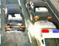
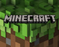
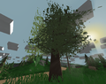

Gta
Postado em 11 de Dezembro 2016
Os jogos da série se passam em cidades fictícias dominadas pelo crime e pelas gangues de rua, fortemente modeladas com base em grandes metrópoles, principalmente dos Estados Unidos, mas com passagens também pela Inglaterra. O personagem jogável (um criminoso, protagonista de um enredo repleto de atividades ilegais, como violência, tráfico de drogas, assassinato, prostituição etc.) pode cumprir missões para o progresso da história, bem como participar de ações não lineares num mundo aberto, consistindo de ação, aventura, RPG, corridas, entre outros
Postado por Paulo Rogériominecraft
Postado em 12 de Dezembro 2016
é um jogo eletrônico tipo sandbox e independente de mundo aberto que permite a construção usando blocos (cubos) dos quais o mundo é feito. Foi criado por Markus "Notch" Persson Postado por Paulo Rogério
unturned
Postado em 13 de Dezembro 2016
Pois bem, além de ser de Graça, esse jogo foi feito pela desenvolvedora Smartly Dressed Games, que por sua vez é feita por um único homem... Além do que, as possibilidades de customização de personagem são praticamente infinitas, desde chapéus e roupas de marinheiro (no maior estilo Quico) até capas mágicas (Isso mesmo, estilo Merlin) Armas bem elaboradas e de bastante polimento e realismo, a pistola, quando você pega no chão, ela vem travada, tendo de apertar v para liberá-la... O personagem pode morrer naturalmente (Barra de Saúde) De Inanição (Barras de Fome e Sede) e de Doença (Barra de doenças) que é mais perigoso quando se come comida estranha que se encontra em cidades...
Postado por Paulo Rogério